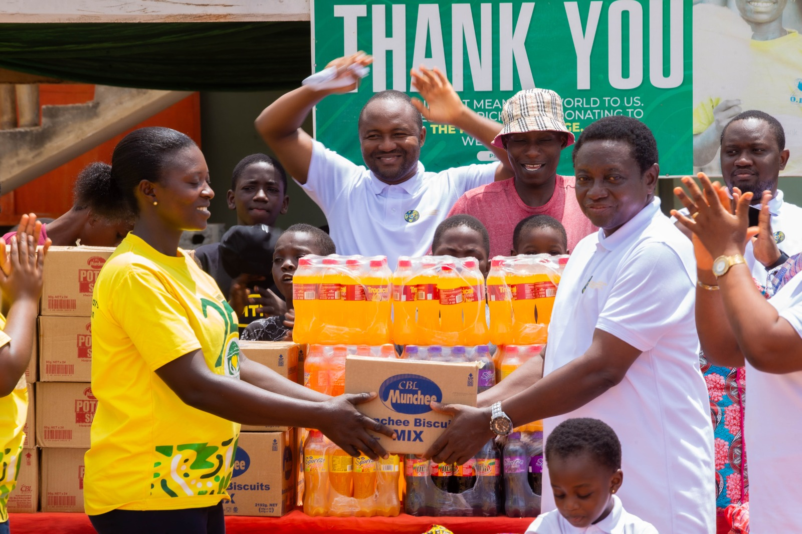
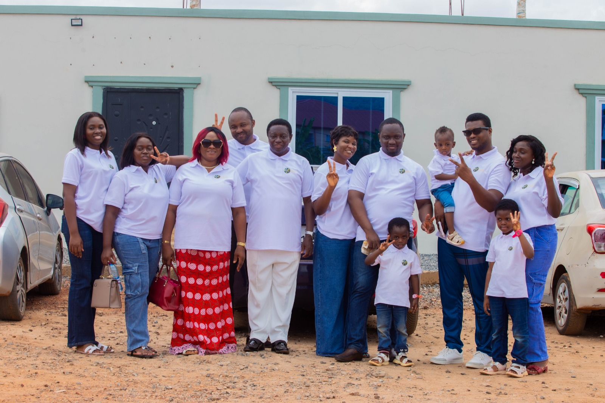
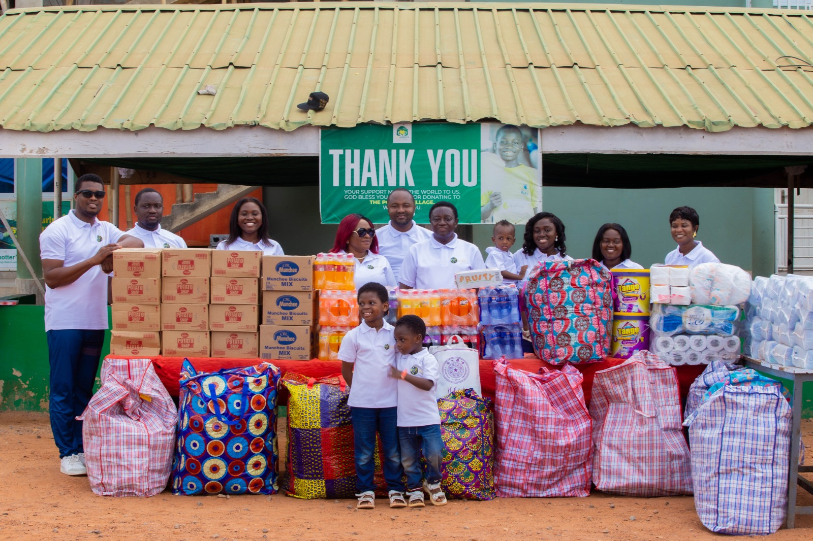
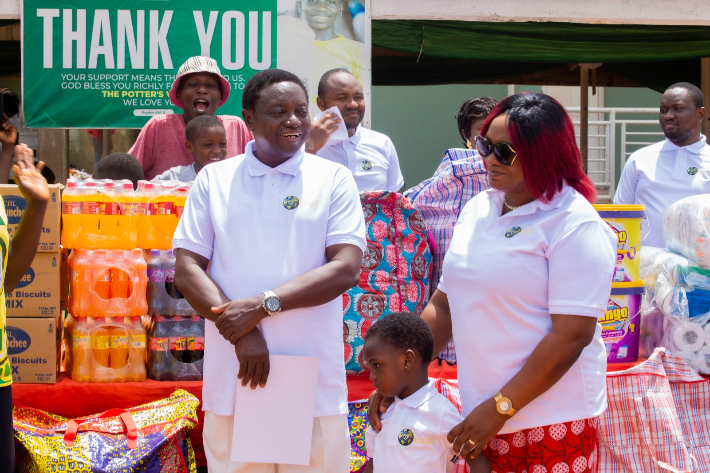

Education & Capacity Development
Inclusive education, vocational skills, entrepreneurship and leadership pathways that strengthen self-reliance and economic opportunity.
Learn more →We work with underserved communities to expand opportunity through inclusive education, gender equity, better health, climate resilience and practical pathways to sustainable development.

GPDO is a non-profit organization committed to empowering marginalized communities through integrated and sustainable development initiatives.
We believe every person, regardless of background or circumstance, deserves access to quality education, healthcare, equal opportunity and a safe, sustainable environment. Our work is rooted in collaboration, ethical governance and solutions that communities can sustain.
Discover our story →We address connected challenges together, because education, health, equality and environmental resilience are strongest when they advance side by side.
Inclusive education, vocational skills, entrepreneurship and leadership pathways that strengthen self-reliance and economic opportunity.
Learn more →Advocacy and initiatives that expand opportunities for women and girls, protect vulnerable populations and advance social justice.
Learn more →Preventive health awareness and community-based interventions that improve wellbeing and reduce inequalities in access to care.
Learn more →Environmental education, community mobilization and practical sustainable solutions that protect current and future generations.
Learn more →Our programme portfolio is designed to be adaptable to local needs while remaining aligned with GPDO's wider development mission.
Locally informed initiatives that help communities shape and own the solutions affecting their future.
Practical training that supports employability, enterprise development and sustainable livelihoods.
Opportunities that strengthen confidence, leadership, learning and productive participation.
Targeted support for women, girls and older persons, with dignity and inclusion at the centre.
Awareness and preventive interventions that bring practical health information closer to communities.
Mobilization and education that help communities understand and respond to climate-related risks.
A glimpse of community outreach and engagement activities connected to GPDO's mission of serving people with dignity and purpose.





Our approach combines local insight, cross-sector collaboration and accountable programme delivery so that solutions are relevant today and durable tomorrow.
A world where marginalized communities thrive through inclusive education, gender equality, quality healthcare, climate resilience and social justice.
Persistent barriers in education, healthcare, gender equality and climate resilience continue to limit opportunity in many communities. Founded in 2024 by Bishop Dr. Akoto and Rev. Mrs. Akoto, GPDO exists to complement government and partner efforts with practical, innovative programmes rooted in human dignity.
Driven by passion. Guided by integrity. Committed to measurable transformation.
We welcome partnerships with foundations, companies, development agencies, public institutions, community organizations and individuals who share our commitment to inclusive, sustainable development.